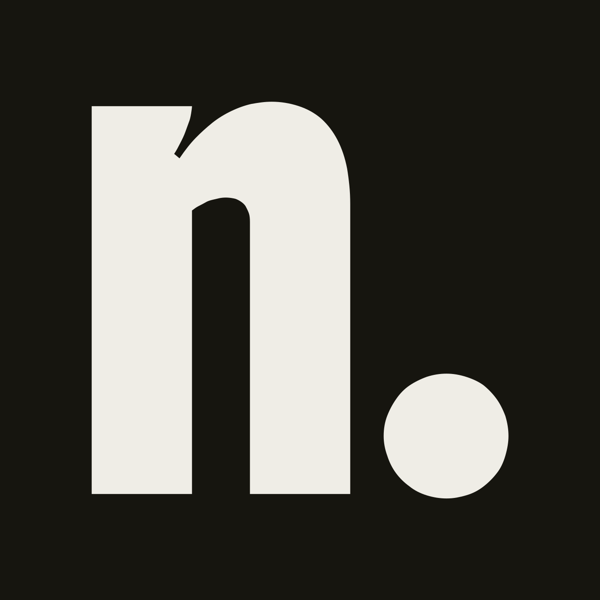

Schmuck, der bleibt. Jede Kollektion ein Kapitel, jedes Stück nummeriert. Dieses Dokument zeigt, wie nomaet. aussieht und klingt.
Die Wortmarke nomaet. in Boldonse und das Zeichen n. für kleine Flächen. Boldonse wird ausschließlich hier verwendet.

60 % Papier, 30 % Tinte, höchstens 10 % Blau. Pro Screen gibt es eine blaue Stelle, die zählt.
Nummern immer. Stempel, Polaroid, Etikett oder Klebeband gezielt und einzeln, nie alles zusammen.